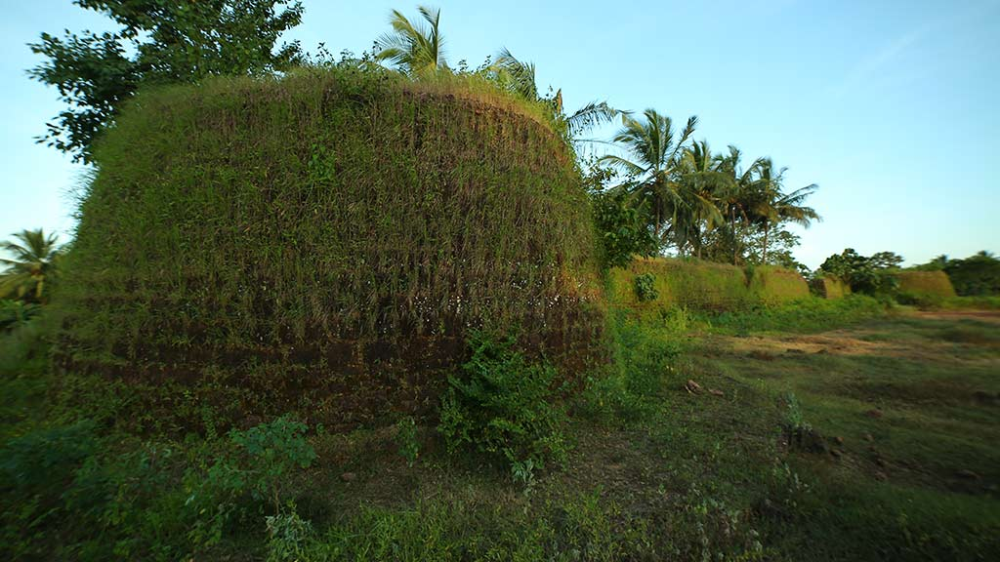
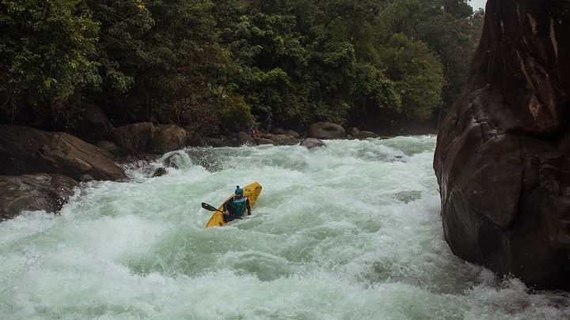

Nileswaram

Kudamkuzhy Fort

Rafting on Tejaswini River

Kappil Beach

Kasargod is a small coastal town in Northern Pary of Kerala displaying a delightful blend of various religions, culture and bounty of nature. Blessed with majestic forts, lofty hills, beautiful offbeat backwaters, temples and pristine beaches, the town oozes charm and tranquillity from every aspect. It is gaining popularity among people from nearby cities owing to the presence of luxury resorts.
Kasargod is also known for its rich and glorious past, is considered to be home to some of the best-preserved forts in Kerala. The variety of art and culture of the town speaks volume about its diversity. In fact, one can hear about seven languages spoken in the town, Tulu, Malayalam, Kannada, Tamil and Konkani being the most famous ones. Adorned with several tourist attractions, this family-friendly destination with booming coir and handloom industry is worth a visit.
Kasaragod district, which is located at the northern end of Kerala, was formed on 24th May, 1984. The District formed on the basis of the order of 19.05.1984 of GO (MS) number 520/84 / RD, comprising of Hosdurg and Kasaragod taluks which were part of undivided Kannur District. In the east the district is Kodagu and Dakshina Kannada districts of Karnataka, the Arabian Sea in the west, and the Kannada District of Karnataka in the north. The district is bounded by the Kannur district. We can say that Kasaragod is the crown of the state Kerala, Land of many differnt languages, the history of the invasion and resistance, testimonies of historical forts, remainings of innovative culture of the modern stone age like ‘Chenkallarakal’, ‘Nannangatikal’, ‘Muniyarakal’, Inscriptions of historical rulers and their practices, Lush green land of highlands of western ghat, the midlands, the unique traditions and practice of worship. Kasargod is reputed for its practice of sharing the culture and languages. The name Kasaragod resembles ‘a group of trees of Kanjira’. In the collection of poems of the poet Linkanna uses the term “Kasaragod” as ‘Thullu Rajaraller Malerite’. Kasaragod is no longer a group of Kanjira wood, land that is rich in lush green areca palm, coconut trees and bananas and hugged by beaches of Arabian Sea. Kasaragod is rich in history and heritage.